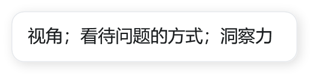
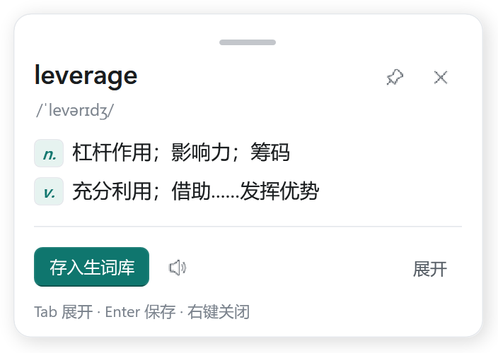
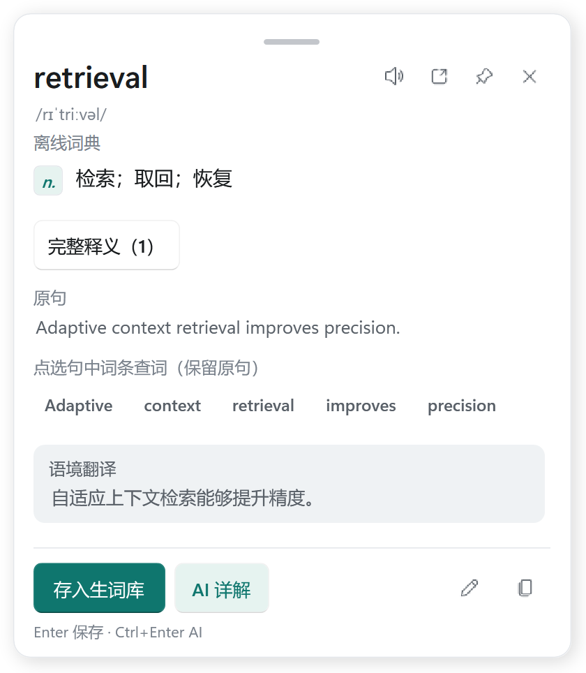

划词取词与轻形态浮窗
点击或悬停浮标即译，按 Tab 展开完整卡片
...offers a broader
perspective
on systems...
极简译文仅显示翻译，右键快速关闭

迷你卡片保留核心词性释义，支持直接收藏与朗读

截屏 OCR 与句中点选查词
框选图片、扫描 PDF 或视频字幕直接识别
框选屏幕区域识别文字
Ctrl+Shift+O
Adaptive context retrieval improves precision.
